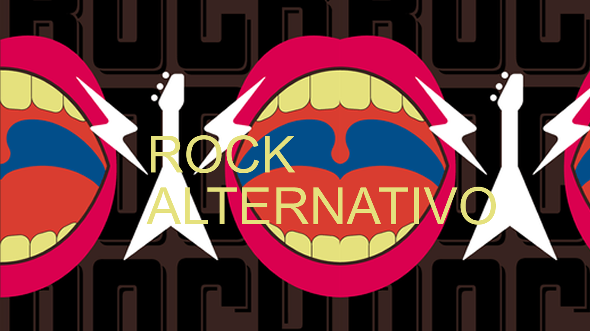

ROCK ALTERNATIVO
El rock alternativo es un género musical que apareció en la década de los 80 provenientes del post-punk, el new wave y el hard rock, el cual suele utilizar a menudo una música compuesta por sonidos y elementos musicales no convencionales, con menos melodía, armonía o ritmo, para lo que se acerca a la cultura underground, un género anti-popular y anti comercial, totalmente opuesto a los estilos comunes y populares.
El término “alternativo” se empleó para definir una nueva y distinta forma de componer rock, estilo que generalmente se asocia con la masividad y de alta popularidad, como ocurre con el pop; al contrario que este nuevo género, que no hacía hincapié en el éxito y las ventas, sino que, más bien al contrario, utiliza un sonido menos melódico que se escucha en pequeños bares, pubs y clubs de underground, es decir, no se ajustan a la música más escuchada del momento.
Tiene sus orígenes e influencias musicales en estilos musicales tan variados como el punk rock, el post-punk, el new wave, el hardcore punk, el folk rock y el pop rock. Los instrumentos más utilizados en este son: guitarra eléctrica, bajos, batería, Instrumentos de teclados.
Algunos de los artistas y grupos más destacados del alternative rock son Radiohead, Sonic Youth, R.E.M., Arctic Monkeys, The strokes, The smashing pumkins.
